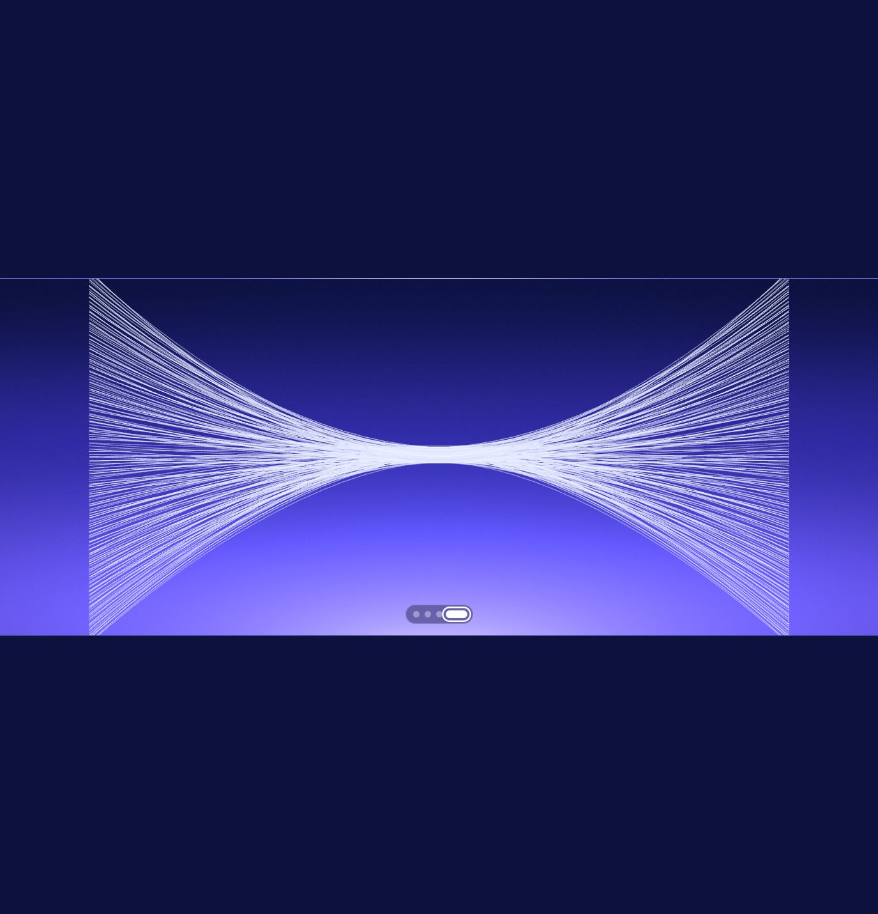

CLEAN-ROOM INTERACTION STUDY
WordPress Three.js Interactions
Two standalone HTML/CSS/JavaScript components with pointer-reactive WebGL, accessible fallbacks, and direct WordPress integration.
Read the documentation
02 Four-State Vector Canvas Generated geometry, pointer deformation, and morphing